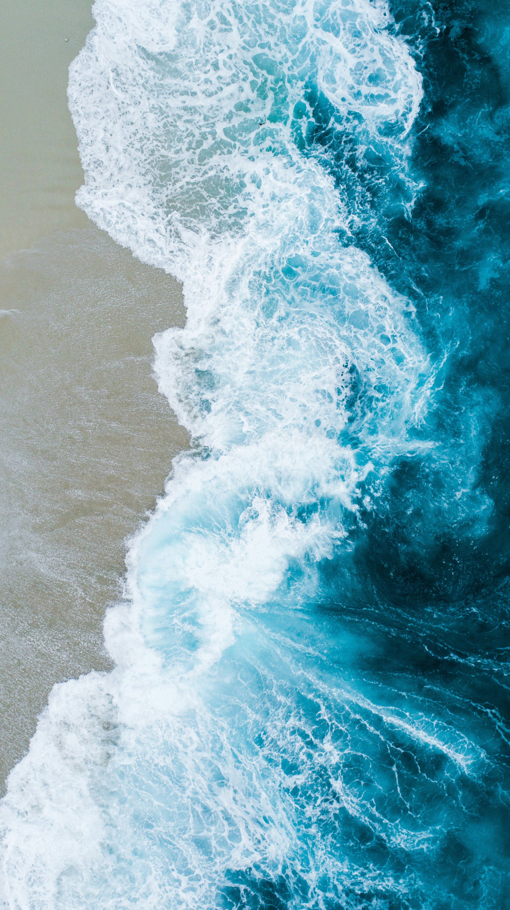

Salut!
Je m'appelle Louis Gervais et je viens de finir mes études de mathématiques.
Je m'intéresse particulièrement aux équations aux dérivées partielles, à la mécanique des fluides et aux mathématiques appliquées aux sciences du vivant. Après j'ai plein de centre d'intérêt vous pouvez les découvrir sur ce site.

J'aime comprendre comment les mathématiques permettent de décrire des phénomènes physiques ou biologiques, mais aussi essayer de rendre ces idées accessibles et visuelles.
À propos de moi
Après une formation en mathématiques fondamentales, je me suis progressivement orienté vers les problèmes à l'interface entre mathématiques, physique et biologie. J'en parle un peu dans la section mathématiques.
Sur ce site, je partagerai à la fois mes travaux et des petites histoires, simulations ou problèmes mathématiques qui me semblent particulièrement intéressants. Je vais essayer que ce soit un maximum accessible pour tout le monde.